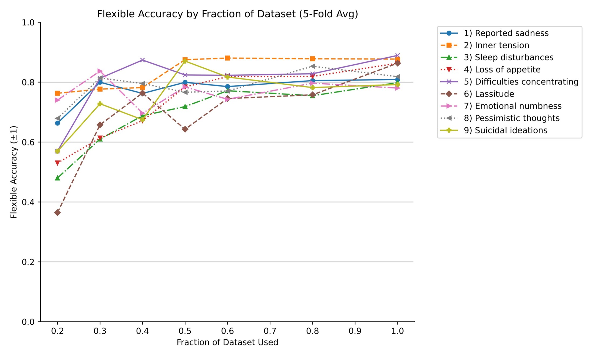
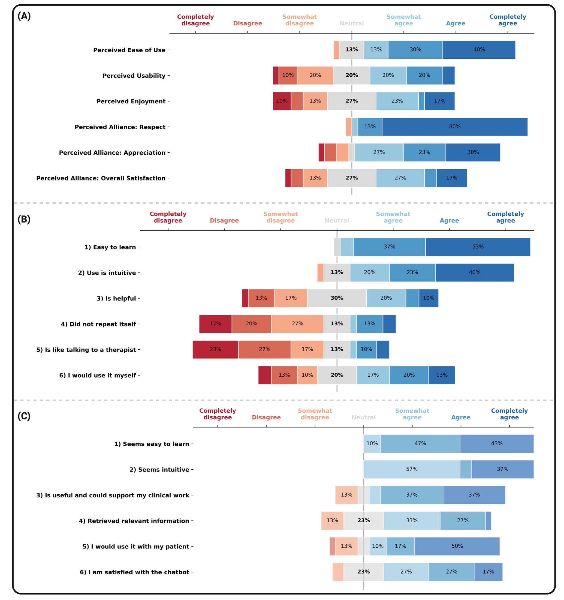

Featured Project 01
MADRS-Chat: AI-Assisted Depression Assessment
Building from structured scoring to real-time clinical dialogue: MADRS-BERT established reliable symptom scoring, then MADRS-Chat moved the full interview process into a clinically constrained conversational workflow.
1. Clinical Problem
In routine psychiatric care, depressive symptoms are often under-documented due to time pressure and non-standardized interviews. This can reduce comparability across visits and make symptom trajectories harder to track.
2. Why This Is a Good AI Target
MADRS interviews are natural language based but highly structured. That makes them well suited for AI-supported assessment. The goal here is assessment support, not autonomous diagnosis or therapy, which keeps clinical boundaries clear while improving efficiency.
3. What MADRS Is
The Montgomery-Asberg Depression Rating Scale (MADRS) is a clinician-rated interview for depressive symptom severity. It covers nine symptom domains (for example sadness, sleep, concentration, lassitude, and suicidal ideation), each scored from 0-6 to produce a total severity profile.
4. Phase I: MADRS-BERT (Understanding)
First, we developed MADRS-BERT to assign item-level scores from transcript text. We intentionally used a lightweight BERT approach because hospital deployment needs models that are resource-aware, scalable, and easier to operationalize in real-world workflows.
5. Phase I Evaluation Highlights
In the MADRS-BERT work, model performance reached up to 88% accuracy with mean absolute error (MAE) as low as 0.7 on item prediction. In external validation, 8 clinicians rated 30 transcripts: clinician-clinician agreement was high (mean ICC=0.92), and MADRS-BERT remained closely aligned (mean ICC=0.78).
6. From Understanding to Dialogue: MADRS-Chat
Scoring transcripts post-hoc is useful, but interviews themselves still consume clinician time. So the next step was MADRS-Chat: a structured conversational agent that conducts the interview and then uses the scoring model for symptom-level outputs.
7. Clinical Design Choice
The architecture separates conversation handling from scoring: Llama-3.1-8B guides dialogue, while MADRS-BERT handles symptom scoring. This hybrid design improves controllability and makes bias measurement/calibration explicit.
8. Results Snapshot
In the feasibility study at the Psychiatric University Hospital, MADRS-Chat showed meaningful agreement with human ratings and high user acceptance. The conversational format increased openness, but also introduced systematic score inflation, which was reduced via lightweight post-hoc calibration.
9. Figures


